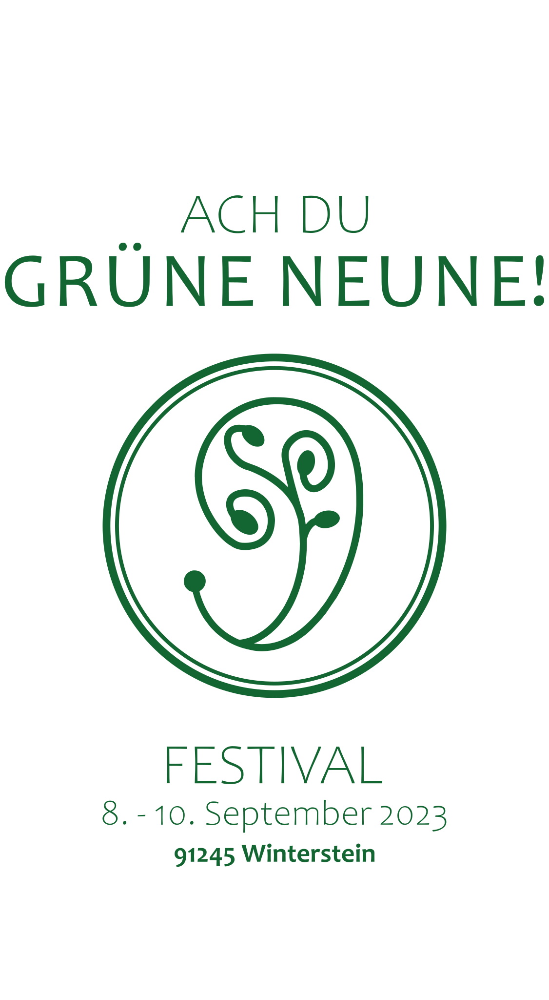
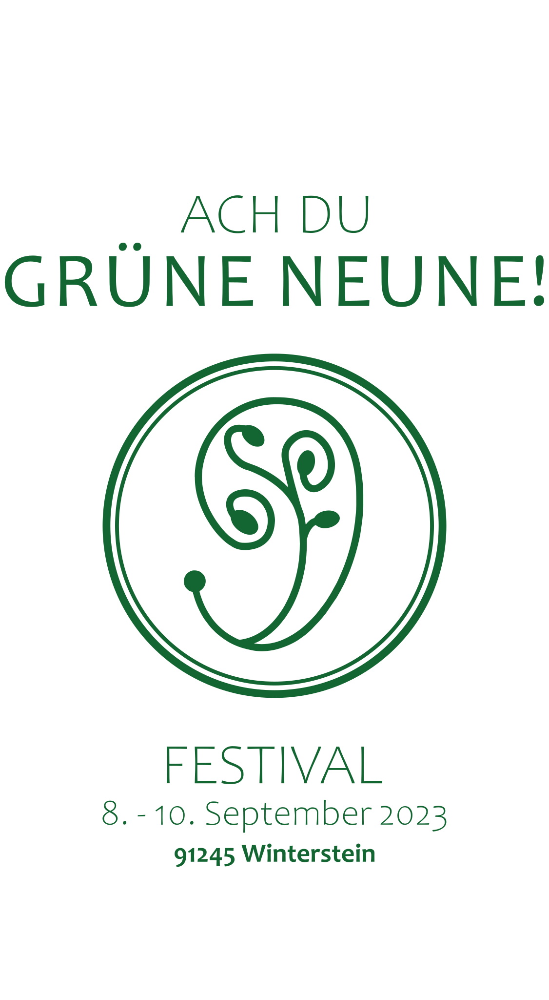

IMPVLSE
Seit 2017 produzieren wir in Nürnberg kompromisslosen und cinematischen Metalcore. In Zusammenarbeit mit Platin-Produzenten Andrew Wade veröffentlichten wir 2019 unsere Debüt-EP ViceVersa, worauf 2022 Point Blank folgte. Beide Alben spielten wir auf nationalen sowie internationalen Bühnen. Seit unserem Live-Debüt 2018 können wir auf mehrere Highlights zurückblicken: Eine Russland-Tour, zahlreiche Shows in Deutschland und Österreich und einen Auftritt bei Rock im Park 2022 vor 5.000 Festivalbesuchern.